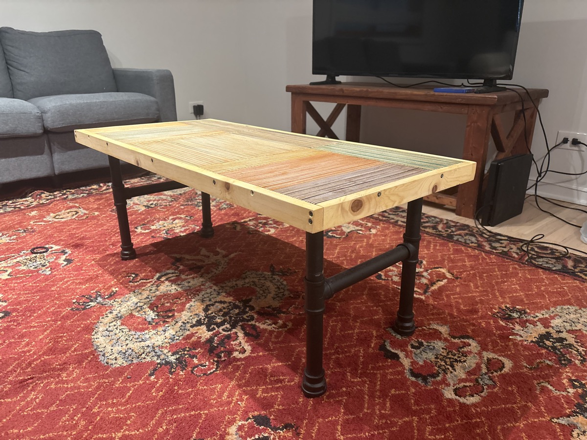
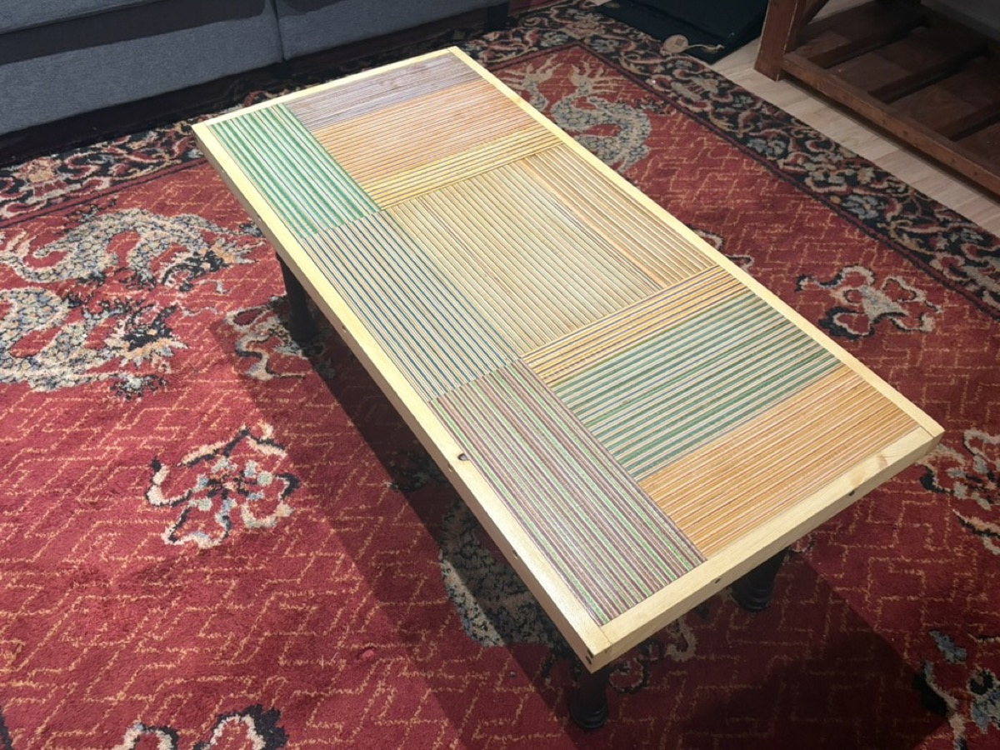
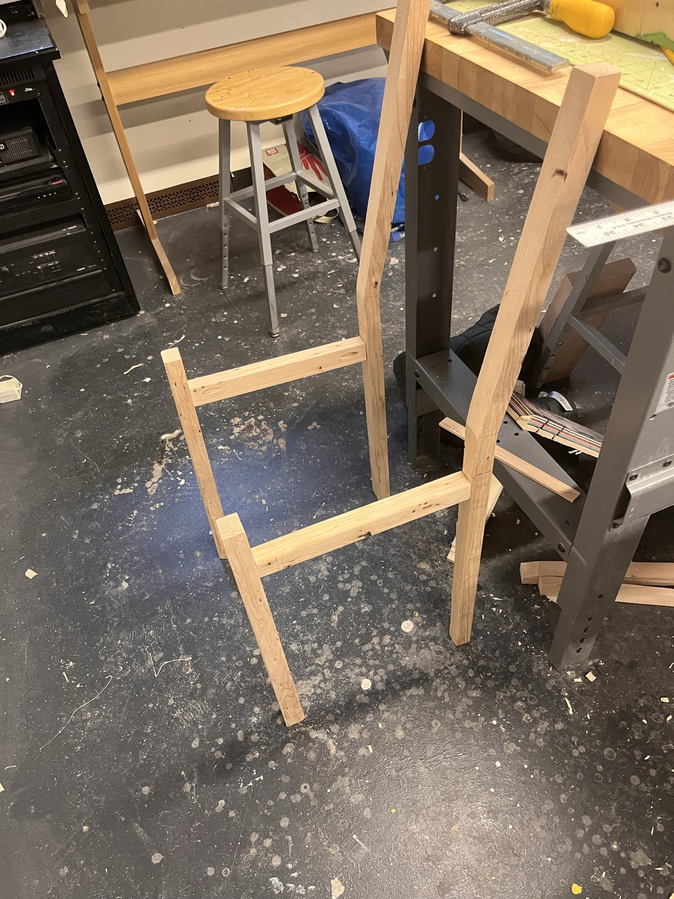

Woodshop
Woodworking has been a great way to improve my decision-making It's super fun to iterate with real consequences, I think I've learned when to stop in refining a project, which is underrated imo.
Coffee Table


Plywood Chair
